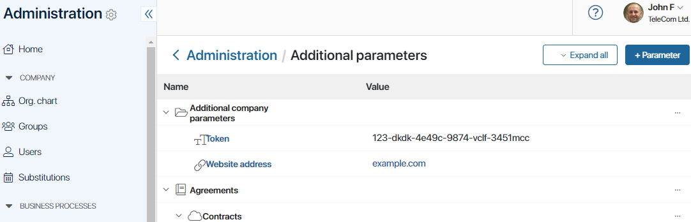
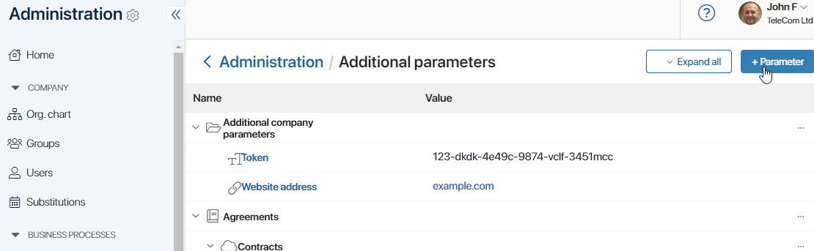
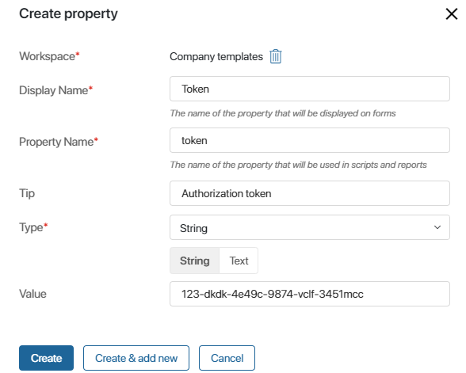
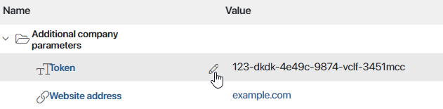

In this section, you can add and store parameters and then use them in business process scripts. Unlike context variables whose values change from instance to instance, parameters remain unchanged for all process instances. You can also use such parameters in server-side widget scripts.
All parameters are stored in one place. This means that in the future if you need to change a parameter, it won’t require you to rewrite all scripts that access it. It will suffice to edit the data in the Additional Parameters section. 
начало примера
Example
Suppose a company accepts orders from customers through a website. The website is integrated with BRIX. This allows exchanging information about order updates with the website, and customers are always aware of the progress on their orders.
Such integration is implemented with a script. To ensure correct script operation, you need to specify the website address and token for authorization. No matter how many process instances there are, these parameters will remain unchanged. In addition, if the company decides to create another business process and set up integration with the website, the same parameters will be reused.
Given this, it is convenient to store the site address and token in the Additional Parameters section. If the website address or token changes, the company employees won’t have to check all the scripts in the processes. It will be enough to change the parameter in the Additional Parameters section.
конец примера
Types of parameters
Parameters can be divided into two groups:
- Global parameters. These parameters are set at the company level and are always accessible in company processes and widgets created at the company level. You can also use them when creating scripts in any workspace or app after enabling the
Globalconstant setting. Please note that in this case, you will not be able to export such workspace or app. - Workspace parameters. These parameters are set at the workspace level. Workspace parameters are always accessible from the workspace processes. In addition, these parameters can be applied in the app business processes, after enabling the
Namespaceconstant setting. - App parameters. These parameters are defined at the app level and are accessible in processes and widgets created at the app level.
начало внимание
Using Global.params or Namespace.params constants in scripts restricts the export of system components. Read more about it in Global constants in scripts.
конец внимание
Create a new parameter
- Create a parameter in one of the following ways:
- Go to Administration > System Settings > Additional Parameters. Here you can set global parameters as well as parameters for a workspace or an app.
- Select a workspace, go to its settings, and click Additional Parameters. Here you can only set parameters for a specific workspace and its apps.
- In a workspace, select an app, go to its settings, and click Additional Parameters. Here you can only set parameters for an app.
- On the page that opens, in the upper right corner, click on the + Parameter button.

- In the window that opens, fill in the following fields:

- Display Name*. Enter the name that will be displayed in the list of parameters.
- Property Name*. This name is generated automatically based on the parameter name. If necessary, you can edit it.
- Tip. Here you can enter additional information about the parameter.
- Type*. The data type that this parameter stores.
- Value. Specify the value of the parameter.
If necessary, the parameter value can be changed. To do this, select the value you want to correct in the list of parameters, and then click on the pencil icon.

Example of using additional parameters
начало внимание
Parameters Global.params, Namespace.params, and Application.params are only available in server scripts and are read-only.
конец внимание
Consider a solution set up for the tech support department. While performing process tasks in BRIX, an employee describes the issue, and then using a script, the data is sent to GitLab, bug tracking system. There, the ticket is automatically created with a title and description, and the executor is selected.
To implement this integration, you can set up the following additional parameters:
gitlab_host. Server address.gitlab_project. Identifier of the project that will include a new ticket.gitlab_token. Authorization token.gitlab_user. A user who will deal with the ticket.
The ticket subject and description are defined through the context variables title and description.
The script looks as follows:
async function createIssueInGitlab(): Promise {
const issue = await fetch(`${ Namespace.params.data.gitlab_host }/api/v4/projects/${ Namespace.params.data.gitlab_project }/issues`, {
method: 'post',
headers: {
'PRIVATE-TOKEN': Namespace.params.data.gitlab_token,
'Content-Type': 'application/json',
},
body: JSON.stringify({
title: Context.data.title,
description: Context.data.description,
assignee_ids: [Namespace.params.data.gitlab_user],
}),
}).then(res => res.json());
Context.data.issue_url = issue.web_url
}
Found a typo? Select it and press Ctrl+Enter to send us feedback